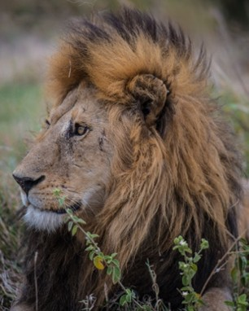
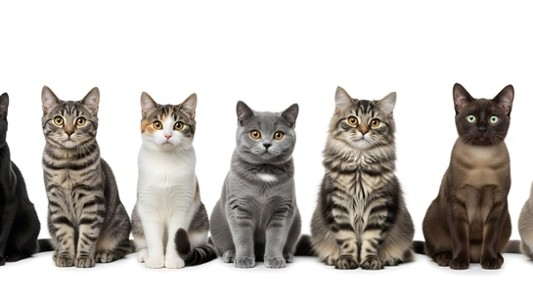
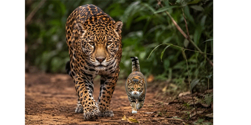

The Amazing World Of Cats
From lions lounging in the tall grasses of the Savannah to the fluffy orange tabby snoring on your windowsill, cats come in more shapes, sizes, and personalities than almost any other animal on the planet. Wild or domestic, cats have fascinated people for thousands of years, and once you start learning about them, it's easy to see why.
How Many Breeds Are There?
Depending on which cat registry you ask, there are somewhere between 45 and 73 officially recognized breeds of domestic cat, according to Hepper Pet Resources. Organizations like the Cat Fanciers' Association and The International Cat Association don't always agree on which breeds count, especially newer or more controversial ones.
Wild cats have their own family tree, too. The scientific cat family, Felidae, includes 40 recognized wild cat species, according to ActiveWild, ranging from massive tigers and lions to lesser-known small cats like the rusty-spotted cat and the Pallas's cat.

How Many Cats Are In The World?
It's basically impossible to get an exact headcount, but Hepper Pet Resources estimates that the global population of cats now exceeds 1 billion once you count pets, strays, and feral cats together.

Domestic vs. Wild
So how different are house cats from their wild relatives? More alike than you'd think, and less than you'd expect.
Both wild and domestic cats belong to the same scientific family, Felidae, and share a lot of the same basic instincts: hunting behavior, sharp reflexes, and that same love of napping in warm, sunny spots. Domestic cats, however, have spent thousands of years alongside humans, which has made them far more comfortable depending on people for food, shelter, and companionship. Wild cats, on the other hand, need to hunt and fend for themselves, and most avoid human contact altogether.
Physically, domestic cats are also just ... smaller. Most wild cat species, especially big cats like lions, tigers, and jaguars, are built for taking down large prey, while a domestic cat's idea of a big hunt is chasing a laser pointer across the living room floor or maybe a mouse.
